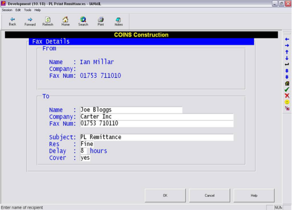

When running Print Remittances function for any

In addition to any overlay or attachment configuration, the option to send PL Remittances via Fax is enabled by using a fourth function parameter against the Print
The function parameters should be defined as follows :
| 1 | Print Form Name: | REM (Mandatory)
NOTE The faxing option can only be used against a configurable form which has a parameter of REM (that is, it will not work for either CHQ or COMB). |
| 2 | Payment Type (Optional): | 'B' ( 'C' ( blank to make all payments" |
| 3 | Billing Type (Optional): | ASI or * or BLANK (Optional) |
| 4 | Auto Fax (Optional): | 'Y' to only filter Accounts with Fax Numbers" 'N' to only filter Accounts without Fax numbers" |
| 5 | Reprint (Optional): | 'RPR' to reprint posted payments or BLANK |
| 6 | Today's Password (Optional) | |
| 7 | Default Print (Optional): | DEFPRN or BLANK (references Print Method field on |
| 8 | Fax Options (Optional): |
'Y' override default fax options for each Parameter 8 when set to Y allows you to override the default fax options as below when the print program is run. Leaving the 8th parameter blank or set to N means that all faxing will be automatic. |
| 9 | FAX Delay: |
Default number of hours to delay fax Parameter 9 allows you to enter a default number of hours delay up to 24 hours. |
If the 8th parameter is not set but the 9th has a non-zero value, then the delay will work in automatic mode.